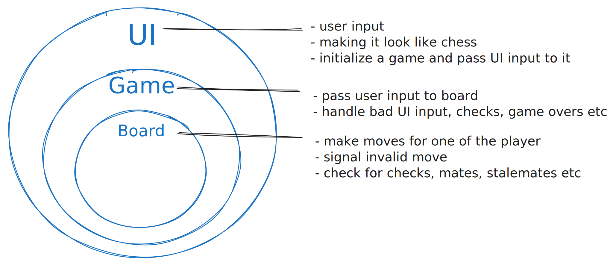

/$$
| $$
/$$$$$$$| $$$$$$$ /$$$$$$ /$$ /$$
/$$_____/| $$__ $$ /$$__ $$| $$ /$$/
| $$ | $$ \ $$| $$$$$$$$ \ $$$$/
| $$ | $$ | $$| $$_____/ >$$ $$
| $$$$$$$| $$ | $$| $$$$$$$ /$$/ $$
\_______/|__/ |__/ \_______/|__/ \__/
The homegrown chess engine in C++.
The engine is aimed to be modular, hence here is a structure of the project

$ chex help
Usage:
./bin/chex web --port 8000
./bin/chex console
Commands:
web Start Chex on a local web server
console Start Chex as a text-based game
help Print this help message
Options:
--port, -p Specify the port for the server (default: 8080)```
## Build
We use [make](https://www.gnu.org/software/make/) to build the source
make chex make clean
## Test
```shell
make chex/tests
./bin/chex.test